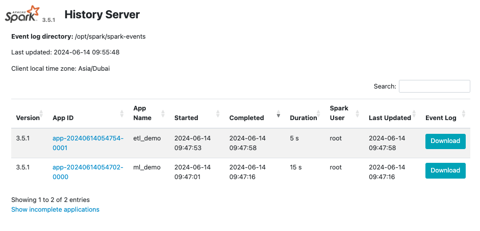

Running Spark using Docker Compose#
For better following this exercise, you should clone the repo spark-docker
Spark Containers and Components#
There are several Spark containers which we need to execute at once and connect them altogether.
services:
spark-master:
container_name: spark-master
build: .
image: spark-image
entrypoint: ['./entrypoint.sh', 'master']
healthcheck:
test: [ "CMD", "curl", "-f", "http://localhost:8080" ]
interval: 5s
timeout: 3s
retries: 3
volumes:
- ./scripts:/opt/spark/scripts
- ./data:/opt/spark/data
- spark-logs:/opt/spark/spark-events
env_file:
- .env.spark
ports:
- '8080:8080'
- '7077:7077'
spark-history-server:
container_name: spark-history
image: spark-image
entrypoint: ['./entrypoint.sh', 'history']
depends_on:
- spark-master
env_file:
- .env.spark
volumes:
- ./scripts:/opt/spark/scripts
- ./data:/opt/spark/data
- spark-logs:/opt/spark/spark-events
ports:
- '18080:18080'
spark-worker:
container_name: spark-worker
image: spark-image
entrypoint: ['./entrypoint.sh', 'worker']
depends_on:
- spark-master
env_file:
- .env.spark
volumes:
- ./scripts:/opt/spark/scripts
- ./data:/opt/spark/data
- spark-logs:/opt/spark/spark-events
volumes:
spark-logs:
Spark Master#
It is the master control plane where it can define the workers, execute the scripts and sharing the resources among workers.
We can access it through localhost:8080 as the UI and it's the main controller of everything about this cluster.
Whatever jobs you're submitting and it's still running, you can see the spark jobs logs from here.
And, it's also having the main spark docker image, which we will build.
Info
The three different containers are coming fom the same docker image, but we call them differently.
As to specify master, we need to call ./entrypoint.sh master
Spark Worker(s)#
You can have 1 or more spark worker(s), it is where your spark code are actually being executed. After it's executed, the result are brought back to spark master
As the info above, this is coming from same docker image, but to specify it, you just need to call ./entrypoint.sh worker
Spark History Server#

As its name, it is where your spark jobs have been done executed, you can see the detail of each jobs in this view.
Info
You can access the UI through localhost:18080
Example of Spark job view
Why Docker Compose#
Docker compose is a tool for defining and running multi-container applications. It is the key to unlocking a streamlined and efficient development and deployment experience.
Compose simplifies the control of your entire application stack, making it easy to manage services, networks, and volumes in a single, comprehensible YAML configuration file.
Then, with a single command, you create and start all the services from your configuration file.
Common use case of Docker compose#
- Development environments
When you're developing software, the ability to run an application in an isolated environment and interact with it is crucial. The Compose command line tool can be used to create the environment and interact with it.
with just single command docker compose up you can bring up all the containers and orchestrate the application.
and single command docker compose down to bring down all the alive containers so it's not exhausting the resources.
- Automated testing environments
An important part of any Continuous Deployment or Continuous Integration process is the automated test suite. Automated end-to-end testing requires an environment in which to run tests. Compose provides a convenient way to create and destroy isolated testing environments for your test suite.
Code example:
- Single host deployments
Compose has traditionally been focused on development and testing workflows, but with each release we're making progress on more production-oriented features.
Spark Docker Image#
The base of Docker Image is python:3.10-bullseye
Installing tools that OS will need, such as sudo, openjdk, etc
RUN apt-get update && \
apt-get install -y --no-install-recommends \
sudo \
curl \
vim \
unzip \
rsync \
openjdk-11-jdk \
build-essential \
software-properties-common \
ssh && \
apt-get clean && \
rm -rf /var/lib/apt/lists/*
We setup some directories and environment variables
# Optional env variables
ENV SPARK_HOME=${SPARK_HOME:-"/opt/spark"}
ENV HADOOP_HOME=${HADOOP_HOME:-"/opt/hadoop"}
RUN mkdir -p ${HADOOP_HOME} && mkdir -p ${SPARK_HOME}
WORKDIR ${SPARK_HOME}
ENV SPARK_VERSION=3.5.1
Downloading spark
# Download spark
RUN mkdir -p ${SPARK_HOME} \
&& curl https://dlcdn.apache.org/spark/spark-${SPARK_VERSION}/spark-${SPARK_VERSION}-bin-hadoop3.tgz -o spark-${SPARK_VERSION}-bin-hadoop3.tgz \
&& tar xvzf spark-${SPARK_VERSION}-bin-hadoop3.tgz --directory /opt/spark --strip-components 1 \
&& rm -rf spark-${SPARK_VERSION}-bin-hadoop3.tgz
Installing python dependencies in requirements.txt
Set some environment variables for Spark
ENV PATH="/opt/spark/sbin:/opt/spark/bin:${PATH}"
ENV SPARK_HOME="/opt/spark"
ENV SPARK_MASTER="spark://spark-master:7077"
ENV SPARK_MASTER_HOST spark-master
ENV SPARK_MASTER_PORT 7077
ENV PYSPARK_PYTHON python3
Copy the spark defaults configuration
spark.master spark://spark-master:7077
spark.eventLog.enabled true
spark.eventLog.dir /opt/spark/spark-events
spark.history.fs.logDirectory /opt/spark/spark-events
Here, were setting that the spark master will be a standalone cluster with the master on port 7077.
Were also enabling the eventLog, eventLog directory and history filesystem logDirectory.
These three settings are required to use the Spark history server. The setting spark.eventLog.dir is the base directory where the events are logged. The spark.history.fs.logDirectory is the directory from which the filesystem history provider will load the logs.
Make the binaries and scripts executable and set PYTHONPATH environment variable to use the python version that comes with spark
RUN chmod u+x /opt/spark/sbin/* && \
chmod u+x /opt/spark/bin/*
ENV PYTHONPATH=$SPARK_HOME/python/:$PYTHONPATH
Finally, copy the entrypoint script and set it as image entrypoint
#!/bin/bash
SPARK_WORKLOAD=$1
echo "SPARK_WORKLOAD: $SPARK_WORKLOAD"
if [ "$SPARK_WORKLOAD" == "master" ];
then
start-master.sh -p 7077
elif [ "$SPARK_WORKLOAD" == "worker" ];
then
start-worker.sh spark://spark-master:7077
elif [ "$SPARK_WORKLOAD" == "history" ]
then
start-history-server.sh
fi
COPY entrypoint.sh .
RUN chmod u+x /opt/spark/entrypoint.sh
ENTRYPOINT ["./entrypoint.sh"]
CMD [ "bash" ]
Tip
this entrypoint.sh is where we define to execute the spark code either master, worker or history server
Build and Up Cluster#
To build up the image and bring up all the containers, you can just execute this command
Output
(base) spark-docker git:(main) make up
docker compose up -d --build
[+] Running 2/2
spark-worker Error pull access denied for spark-image, repository does not exist or may require 'docker login': denied: requested access to the resource is denied 2.8s
spark-history-server Error pull access denied for spark-image, repository does not exist or may require 'docker login': denied: requested access to the resource is denied 2.7s
[+] Building 148.9s (17/17) FINISHED docker:desktop-linux
=> [spark-master internal] load build definition from Dockerfile 0.0s
=> => transferring dockerfile: 1.63kB 0.0s
=> [spark-master internal] load metadata for docker.io/library/python:3.10-bullseye 2.8s
=> [spark-master auth] library/python:pull token for registry-1.docker.io 0.0s
=> [spark-master internal] load .dockerignore 0.0s
=> => transferring context: 2B 0.0s
=> [spark-master spark-base 1/5] FROM docker.io/library/python:3.10-bullseye@sha256:a4d9982b391b91d6ffaae6156f2b55ed769d854682d6611c3805c436b1920b72 33.7s
=> => resolve docker.io/library/python:3.10-bullseye@sha256:a4d9982b391b91d6ffaae6156f2b55ed769d854682d6611c3805c436b1920b72 0.0s
=> => sha256:a4d9982b391b91d6ffaae6156f2b55ed769d854682d6611c3805c436b1920b72 1.65kB / 1.65kB 0.0s
=> => sha256:d344660ab716c56ed8760cd05fd6f09d201a7398129ac252241dcae6a8edce6c 7.95kB / 7.95kB 0.0s
=> => sha256:bbf3ed169027034dd58cdf87bf07f4506ecf971f22a8c5b8167832d2f69c3a6e 2.01kB / 2.01kB 0.0s
=> => sha256:f975e52008de385eb513258b4912477b214cddf1c8e87877f85028d940bfcdae 53.74MB / 53.74MB 23.9s
=> => sha256:859b5bb8f5d471015f3add7e778bc507fc4a6f1fce8561c2b0a336734a55a365 15.75MB / 15.75MB 4.0s
=> => sha256:28a7ca076c1ea04622ddf9f43ff2f138f6c50a40118747a45d2618cc64591d6b 54.70MB / 54.70MB 20.5s
=> => sha256:315e6e292ef6ca0113f94dbf806ecbea714420b97b385d4138e3cb84616995e3 189.94MB / 189.94MB 30.2s
=> => sha256:fc2e3a8abd9b020e02a6952b9f866f08fd333baf06330ccbb22a1f28ebd1e972 6.41MB / 6.41MB 22.4s
=> => sha256:3e954bdeb399238cc34f825d4f940e4fe2d4fb1ba1ceecc503d5a0cd03932696 17.22MB / 17.22MB 25.1s
=> => extracting sha256:f975e52008de385eb513258b4912477b214cddf1c8e87877f85028d940bfcdae 1.2s
=> => sha256:813820ddecbd5e83f239c09103deb809036a470e0976d4d044f3db994fc70741 245B / 245B 24.4s
=> => sha256:e6b6c385c0e4d7394694a178278f2fcf3ce8af2e986c85d3e369882020ad96b6 3.08MB / 3.08MB 25.9s
=> => extracting sha256:859b5bb8f5d471015f3add7e778bc507fc4a6f1fce8561c2b0a336734a55a365 0.2s
=> => extracting sha256:28a7ca076c1ea04622ddf9f43ff2f138f6c50a40118747a45d2618cc64591d6b 1.2s
=> => extracting sha256:315e6e292ef6ca0113f94dbf806ecbea714420b97b385d4138e3cb84616995e3 2.9s
=> => extracting sha256:fc2e3a8abd9b020e02a6952b9f866f08fd333baf06330ccbb22a1f28ebd1e972 0.1s
=> => extracting sha256:3e954bdeb399238cc34f825d4f940e4fe2d4fb1ba1ceecc503d5a0cd03932696 0.3s
=> => extracting sha256:813820ddecbd5e83f239c09103deb809036a470e0976d4d044f3db994fc70741 0.0s
=> => extracting sha256:e6b6c385c0e4d7394694a178278f2fcf3ce8af2e986c85d3e369882020ad96b6 0.1s
=> [spark-master internal] load build context 0.0s
=> => transferring context: 984B 0.0s
=> [spark-master spark-base 2/5] RUN apt-get update && apt-get install -y --no-install-recommends sudo curl vim unzip rsync openjdk-11-jdk build-essential software-properties-common ssh && apt-get clean && rm -rf /var/lib/apt/lists/* 25.0s
=> [spark-master spark-base 3/5] RUN mkdir -p /opt/hadoop && mkdir -p /opt/spark 0.1s
=> [spark-master spark-base 4/5] WORKDIR /opt/spark 0.0s
=> [spark-master spark-base 5/5] RUN mkdir -p /opt/spark && curl https://dlcdn.apache.org/spark/spark-3.5.1/spark-3.5.1-bin-hadoop3.tgz -o spark-3.5.1-bin-hadoop3.tgz && tar xvzf spark-3.5.1-bin-hadoop3.tgz --directory /opt/spark --strip-components 1 && rm -rf spark-3.5.1-bin-hadoop3.tgz 37.8s
=> [spark-master pyspark 1/6] COPY requirements.txt . 0.0s
=> [spark-master pyspark 2/6] RUN pip3 install -r requirements.txt 47.5s
=> [spark-master pyspark 3/6] COPY conf/spark-defaults.conf /opt/spark/conf 0.0s
=> [spark-master pyspark 4/6] RUN chmod u+x /opt/spark/sbin/* && chmod u+x /opt/spark/bin/* 0.1s
=> [spark-master pyspark 5/6] COPY entrypoint.sh . 0.0s
=> [spark-master pyspark 6/6] RUN chmod u+x /opt/spark/entrypoint.sh 0.1s
=> [spark-master] exporting to image 1.5s
=> => exporting layers 1.5s
=> => writing image sha256:ca5932db9f24372402aa4da122aa71c98abd27140c0738bc68418e2c12bbd4f7 0.0s
=> => naming to docker.io/library/spark-image 0.0s
[+] Running 5/5
Network spark-docker_default Created 0.0s
Volume "spark-docker_spark-logs" Created 0.0s
Container spark-master Started 0.1s
Container spark-worker Started 0.2s
Container spark-history Started
You can check the running containers by running this command
Output
(base) spark-docker git:(main) docker ps
Found existing alias for "docker ps". You should use: "dps"
CONTAINER ID IMAGE COMMAND CREATED STATUS PORTS NAMES
93e611f3161b spark-image "./entrypoint.sh his" 18 seconds ago Up 17 seconds 0.0.0.0:18080->18080/tcp spark-history
31ca78964798 spark-image "./entrypoint.sh wor" 18 seconds ago Up 17 seconds spark-worker
73ffa359696b spark-image "./entrypoint.sh mas" 18 seconds ago Up 17 seconds (healthy) 0.0.0.0:7077->7077/tcp, 0.0.0.0:8080->8080/tcp spark-master
Submit Jobs#
To submit the jobs, you must enter the spark master runtime container.
Output
(base) spark-docker git:(main) make dev
docker exec -it spark-master bash
root@73ffa359696b:/opt/spark#
Running ML models#
I have sample script for ML prediction here.
from pyspark.sql import SparkSession
from pyspark.sql.functions import date_format, col
from pyspark.ml.feature import StringIndexer, OneHotEncoder, VectorAssembler
from pyspark.ml import Pipeline
from pyspark.ml.clustering import KMeans
from pyspark.ml.evaluation import ClusteringEvaluator
# Initialize spark session
spark = (
SparkSession.
builder.
appName("ml_demo").
config("spark.cores.max", "4").
config("spark.sql.shuffle.partitions", "5").
getOrCreate()
)
# Loading the data
df = spark.read.options(header=True, inferSchema=True).csv('./data/retail-data/by-day')
df.createOrReplaceTempView("retail_data")
df.show(5)
# Preprocessing
pdf = df.na.fill(0).withColumn("day_of_week", date_format(col("InvoiceDate"), "EEEE")).coalesce(5)
# Split the data
train_df = pdf.where("InvoiceDate < '2011-07-01'")
test_df = pdf.where("InvoiceDate >= '2011-07-01'")
# ML Pipeline
indexer = StringIndexer().setInputCol("day_of_week").setOutputCol("day_of_week_index")
encoder = OneHotEncoder().setInputCol("day_of_week_index").setOutputCol("day_of_week_encoded")
vectorAssembler = VectorAssembler().setInputCols(["UnitPrice", "Quantity", "day_of_week_encoded"]).setOutputCol("features")
tf_pipeline = Pipeline().setStages([indexer, encoder, vectorAssembler])
fitted_pipeline = tf_pipeline.fit(train_df)
# Transform Data
transformed_train = fitted_pipeline.transform(train_df)
transformed_test = fitted_pipeline.transform(test_df)
# building Model
kmeans = KMeans().setK(20).setSeed(1)
kmModel = kmeans.fit(transformed_train)
print(kmModel.summary.trainingCost)
# Predictions
predictions = kmModel.transform(transformed_test)
evaluator = ClusteringEvaluator()
silhouette = evaluator.evaluate(predictions)
print("Silhouette with squared euclidean distance = " + str(silhouette))
centers = kmModel.clusterCenters()
print("Cluster Centers: ")
for center in centers:
print(center)
to execute, once enter the spark-master, run this command below
Output
Silhouette with squared euclidean distance = 0.5427938390491535
Cluster Centers:
[4.09293606 2.73959977 0.18896861 0.19629835 0.18589279 0.16698473
0.14731972]
[1.0400e+00 7.4215e+04 0.0000e+00 1.0000e+00 0.0000e+00 0.0000e+00
0.0000e+00]
[ 1.0400e+00 -7.4215e+04 0.0000e+00 1.0000e+00 0.0000e+00 0.0000e+00
0.0000e+00]
[ 3.897e+04 -1.000e+00 0.000e+00 0.000e+00 0.000e+00 0.000e+00
1.000e+00]
[ 1.6670865e+04 -1.0000000e+00 0.0000000e+00 0.0000000e+00
0.0000000e+00 1.0000000e+00 0.0000000e+00]
[ 7.5000e-03 -9.4045e+03 2.5000e-01 7.5000e-01 0.0000e+00 0.0000e+00
0.0000e+00]
[ 7.385808e+03 -6.000000e-01 0.000000e+00 8.000000e-01 2.000000e-01
0.000000e+00 0.000000e+00]
[ 1.94092118e+03 -1.76470588e-01 5.88235294e-02 1.76470588e-01
4.11764706e-01 0.00000000e+00 3.52941176e-01]
[8.407500e-01 1.213475e+03 2.125000e-01 2.500000e-01 1.125000e-01
2.000000e-01 1.625000e-01]
[ 2.91481481e-01 -1.34285185e+03 1.85185185e-01 2.96296296e-01
1.85185185e-01 2.59259259e-01 7.40740741e-02]
[ 1.41599732 114.6946616 0.20817512 0.24078624 0.12754076
0.21710967 0.15434443]
[ 1.3524695e+04 -5.0000000e-01 0.0000000e+00 1.0000000e+00
0.0000000e+00 0.0000000e+00 0.0000000e+00]
[ 5.43415e+03 -1.00000e+00 0.00000e+00 1.25000e-01 3.75000e-01
0.00000e+00 5.00000e-01]
[ 1.51681407 19.67695062 0.22239997 0.18547297 0.15614466 0.19282409
0.15604944]
[6.06428571e-01 3.20957143e+03 2.85714286e-01 1.42857143e-01
1.42857143e-01 1.42857143e-01 2.85714286e-01]
[1.90351052e+02 8.47036329e-01 1.64435946e-01 3.02103250e-01
2.31357553e-01 1.51051625e-01 1.30019120e-01]
[1.21189516e+00 4.17725806e+02 2.98387097e-01 2.01612903e-01
1.45161290e-01 1.81451613e-01 1.41129032e-01]
[7.75176053e+02 1.03947368e+00 1.97368421e-01 1.97368421e-01
3.02631579e-01 1.05263158e-01 1.97368421e-01]
[ 3.50000000e-01 -3.15500000e+03 0.00000000e+00 1.66666667e-01
3.33333333e-01 5.00000000e-01 0.00000000e+00]
[ 4.08333333e-01 -4.22783333e+02 2.00000000e-01 2.00000000e-01
2.16666667e-01 1.50000000e-01 2.33333333e-01]
Running ETL#
I have sample ETL code
from pyspark.sql import SparkSession
# Initialize spark session
spark = (
SparkSession.
builder.
appName("etl_demo").
config("spark.cores.max", "4").
config("spark.sql.shuffle.partitions", "5").
getOrCreate()
)
SOURCE_PATH = "./data/yellow_trip_data"
DEST_PATH = "./data/output/count_by_vendor.parquet"
# Loading the data
df = spark.read.options(inferSchema=True).parquet(SOURCE_PATH)
df.createOrReplaceTempView("yellow_trip_data")
df.show(5)
# Transformation: Count
df2 = df.groupBy("VendorID").count()
df2.write.mode("overwrite").parquet(DEST_PATH)
# Viewing Output
df3 = spark.read.options(inferSchema=True).parquet(DEST_PATH)
df3.createOrReplaceTempView("count_by_vendor")
spark.sql("select * from count_by_vendor").show()
Source files
+--------+--------------------+---------------------+---------------+-------------+----------+------------------+------------+------------+------------+-----------+-----+-------+----------+------------+---------------------+------------+--------------------+-----------+
|VendorID|tpep_pickup_datetime|tpep_dropoff_datetime|passenger_count|trip_distance|RatecodeID|store_and_fwd_flag|PULocationID|DOLocationID|payment_type|fare_amount|extra|mta_tax|tip_amount|tolls_amount|improvement_surcharge|total_amount|congestion_surcharge|airport_fee|
+--------+--------------------+---------------------+---------------+-------------+----------+------------------+------------+------------+------------+-----------+-----+-------+----------+------------+---------------------+------------+--------------------+-----------+
| 1| 2022-03-01 00:13:08| 2022-03-01 00:24:35| 1.0| 2.4| 1.0| N| 90| 209| 2| 10.0| 3.0| 0.5| 0.0| 0.0| 0.3| 13.8| 2.5| 0.0|
| 1| 2022-03-01 00:47:52| 2022-03-01 01:00:08| 1.0| 2.2| 1.0| N| 148| 234| 2| 10.5| 3.0| 0.5| 0.0| 0.0| 0.3| 14.3| 2.5| 0.0|
| 2| 2022-03-01 00:02:46| 2022-03-01 00:46:43| 1.0| 19.78| 2.0| N| 132| 249| 1| 52.0| 0.0| 0.5| 11.06| 0.0| 0.3| 67.61| 2.5| 1.25|
| 2| 2022-03-01 00:52:43| 2022-03-01 01:03:40| 2.0| 2.94| 1.0| N| 211| 66| 1| 11.0| 0.5| 0.5| 4.44| 0.0| 0.3| 19.24| 2.5| 0.0|
| 2| 2022-03-01 00:15:35| 2022-03-01 00:34:13| 1.0| 8.57| 1.0| N| 138| 197| 1| 25.0| 0.5| 0.5| 5.51| 0.0| 0.3| 33.06| 0.0| 1.25|
+--------+--------------------+---------------------+---------------+-------------+----------+------------------+------------+------------+------------+-----------+-----+-------+----------+------------+---------------------+------------+--------------------+-----------+
Output
+--------+-------+
|VendorID| count|
+--------+-------+
| 6| 27817|
| 2|8897508|
| 5| 97|
| 1|3745742|
+--------+-------+
Info
If you go to your local files, you will find that the output parquets are written to your local, in path data/output/
In next interations, you can try to write into cloud storage instead, such as: Google Cloud Storage or Amazon S3, so you're not dumping everything to your local.
Bring down the Resources#
In order to not exhausting the resources of your local, you can bring down all the alive containers by just 1 command
Output
(base) spark-docker git:(main) make down
docker compose down --rmi all
[+] Running 5/3
Container spark-history Removed 10.2s
Container spark-worker Removed 10.2s
Container spark-master Removed 10.1s
Image spark-image:latest Removed 0.0s
Network spark-docker_default Removed